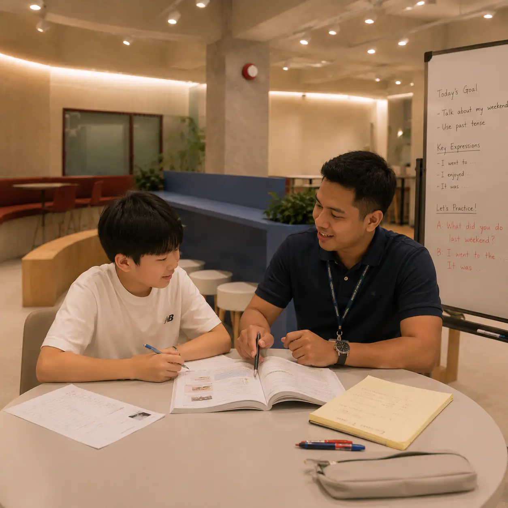
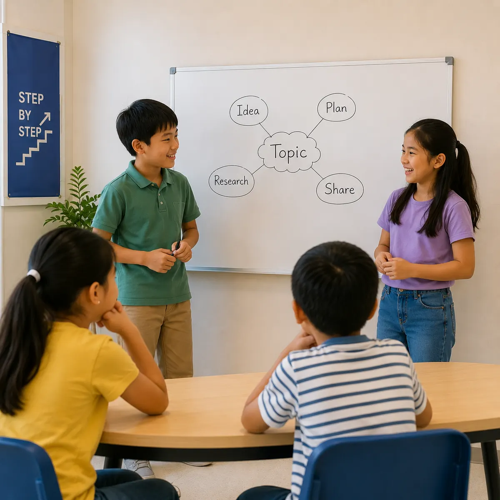

Student-First Personalization
Placement results, goals, pace, and learning habits guide the focus of each student’s lessons.
About TSA
We turn English knowledge into confident communication through personalized practice, purposeful output, and continuous feedback.
THE TSA WAY
Students do not come to TSA only to know more English. They come to use it independently in study, work, travel, and everyday life.
Placement results, goals, pace, and learning habits guide the focus of each student’s lessons.
Students speak, write, ask, and respond before waiting for perfect English. Communication grows through use.
Teachers correct what matters, explain why, and help students reuse the language until they can monitor themselves.
LEARNING CYCLE
Every lesson moves from understanding the student to applying English in a new situation.
Confirm the current level, immediate goal, confidence, and recurring communication challenge.
Teachers show useful patterns, pronunciation, and examples in a form the student can understand.
Students produce the language repeatedly through guided conversation, tasks, and role-play.
Feedback is reused in a different context so progress continues beyond one lesson.
LEARNING IN ACTION
Personalized lessons, collaborative speaking, and presentations help students turn new language into communication they can use.



LEARNING OUTCOMES
TSA aims for visible language progress and the habits students need to keep growing on their own.

The goal is not one perfect answer. It is the ability to enter unfamiliar situations, organize thoughts, and communicate with confidence.